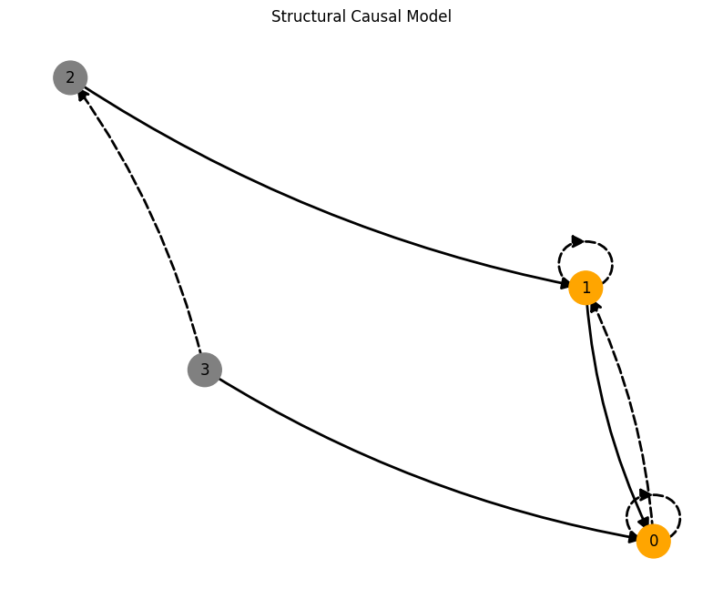
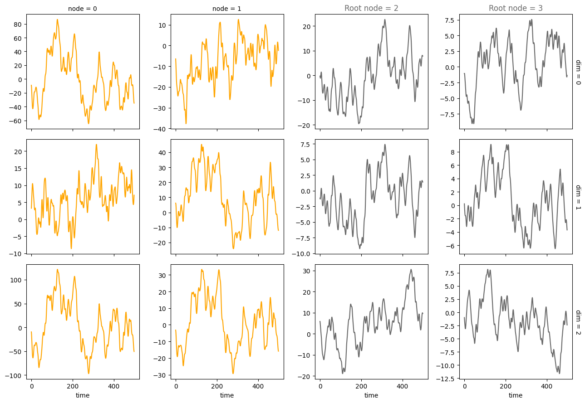

Time-lagged edges#
This notebook showcases how to create hierarchically coupled causal models with time-lagged edges.
%load_ext autoreload
%autoreload 2
%matplotlib inline
The autoreload extension is already loaded. To reload it, use:
%reload_ext autoreload
import matplotlib.pyplot as plt
import matplotlib as mpl
from causaldynamics.scm import create_scm_graph
from causaldynamics.plot import plot_trajectories, plot_scm
from causaldynamics.creator import create_scm, simulate_system
Let’s create a the coupled causal model with time-lag edges with probability time_lag_edge_probability and a time_lag measured in ODE integration steps.
num_nodes = 4
node_dim = 3
num_timesteps = 500
time_lag = 100
time_lag_edge_probability = 0.1
A, W, b, root_nodes, magnitudes = create_scm(
num_nodes,
node_dim=node_dim,
confounders=False,
graph="scale-free",
time_lag=time_lag,
time_lag_edge_probability=time_lag_edge_probability
)
# Print the adjacency matrix
print(f"A has the shape {A.shape} representing (lag, num_nodes, node_dim')")
print(A)
INFO - Creating SCM with 4 nodes and 3 dimensions each...
A has the shape torch.Size([2, 4, 4]) representing (lag, num_nodes, node_dim')
tensor([[[0., 0., 0., 0.],
[1., 0., 0., 0.],
[0., 1., 0., 0.],
[1., 0., 0., 0.]],
[[1., 1., 0., 0.],
[0., 1., 0., 0.],
[0., 0., 0., 0.],
[0., 0., 1., 0.]]])
# Let's have a look at the adjacency matrix without time-lag edges:
A[0]
tensor([[0., 0., 0., 0.],
[1., 0., 0., 0.],
[0., 1., 0., 0.],
[1., 0., 0., 0.]])
# and now at the time-lagged edges:
A[1]
tensor([[1., 1., 0., 0.],
[0., 1., 0., 0.],
[0., 0., 0., 0.],
[0., 0., 1., 0.]])
To simulate the system with time-lagged edged, we can use the simulate_system function:
da = simulate_system(
A, W, b,
num_timesteps=num_timesteps,
num_nodes=num_nodes,
init_ratios=[1., 0.],
init=None,
standardize=False,
system_name="random",
time_lag=5,
make_trajectory_kwargs={"resample": True, "noise": 0.}
)
INFO - Simulating random system for 500 timesteps...
And finally, let’s have a look at the graph and the trajectories. Dashed lines visualize time-lag edges and continuous lines non-time-lagged egdes. Dash-dotted lines show both a time-lagged edge and a non-time-lagged edge.
plot_scm(G=create_scm_graph(A), root_nodes=root_nodes)
plt.show()
# Plot the trajectories
plot_trajectories(da, root_nodes, sharey=False)
plt.show()
# # Animate the trajectories (takes a while to run...)
# mpl.rcParams['animation.embed_limit'] = 50 * 1024**2 # Increase the memory limit to 50MB
# anim = animate_3d_trajectories(da, frame_skip=5, rotation_speed=0.2, rotate=True , show_history=True, plot_type='subplots', root_nodes=root_nodes)
# display(anim)

